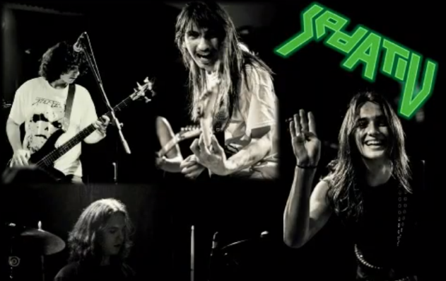
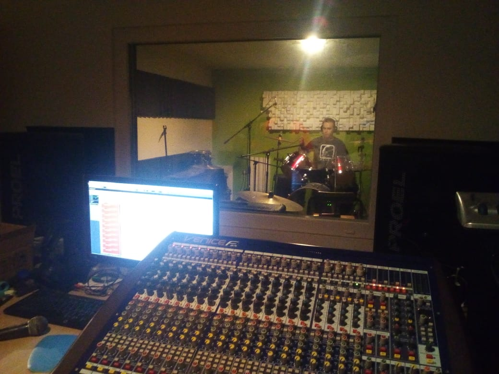

Sedativ postoji od 2012. godine kada su ga osnovali basista Sebastijan Zadravec i gitarist Petar Vinković. Sastavu su se odmah pridružili bubnjar Filip Levačić i gitarist Pavao Mesarić, koji je kasnije odlučio biti i glavni vokal u bendu. Prvu pjesmu „Razarač“ kao singl izdali su 2014. godine. Ubrzo je uslijedio i EP od 6 pjesama, objavljen također 2014. godine, a 2015. je dobio i fizičko izdanje na CD-u koji je prodan u oko 100 primjeraka. Najveći uzori Sedativu su američki bendovi Megadeth i Overkill, kanadski bend Razor te bendovi s ovih prostora kao što su Divlje Jagode, Pergament, Nadimač te Narednik Lobanja i Vod Smrti.
Na EPu nazvanom „Sedativ“ nalaze se 4 autorske pjesme, jedna instrumentalna stvar te obrada popularne „Smokvice“ od Tajči. 2015. godine zbog obaveza gitarist Petar Vinković napušta sastav, te bend prestaje s aktivnim radom. 2017. kao tročlani sastav, Sedativ izdaje demo „Frajer in the Hole“. Zajedno sa pjesmom „Frajer in the Hole“ na tom demo singlu našla se još jedna instrumentalna stvar kao uvod, ali i demo snimka prve pjesme „Razarač“ iz 2013. godine. 2018. godine bendu se pridružuje gitarist Karlo Rajn nakon što je s radom prestao njegov prijašnji bend Crowd Control iz Varaždina. Sedativ opet počinje s aktivnim radom nakon gotovo 3 godine pauze, te početkom 2019. objavljuje svoj prvi video spot za pjesmu „Ljigavci“.
S obzirom da bend sada ima novog, tek pristiglog gitaristu, bend je u fazi uvježbavanja i pripremanja za buduće nastupe, no za to će još trebati vremena. Nakon objave spota „Frajer in the Hole“ bend dalje nastavlja s pisanjem novih pjesama, te najavljuje novi album, koji bi trebao izaći negdje u 2020. godini. Album će se sastojati od 7 autorskih pjesama i jedne obrade.
